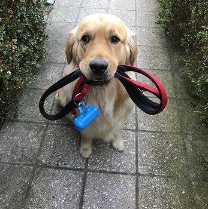

Хто ж ми є ?
Ми — ЛапЛап. Команда людей, які щиро люблять собак і створили сервіс, де кожен хвостик
отримує турботу, безпеку та щирі прогулянки. Ми гуляємо так, як гуляли б зі своїми власними
улюбленцями — з увагою, теплом і повагою до кожної собачої індивідуальності.
отримує турботу, безпеку та щирі прогулянки. Ми гуляємо так, як гуляли б зі своїми власними
улюбленцями — з увагою, теплом і повагою до кожної собачої індивідуальності.
Нюша
Доглядальниця Затишку
Доглядальниця Затишку
Помічає кожну дрібницю: чи
не холодно песику, чи не
тисне шлейка, чи не втомився
хвостик. Дуже дбайлива.
не холодно песику, чи не
тисне шлейка, чи не втомився
хвостик. Дуже дбайлива.

Оскар
Великий Охоронець
Великий Охоронець
Помічає всі дрібниці: чи зручно,
чи тепло, чи не втомилися. Його
турбота відчувається навіть у
маленьких деталях.
чи тепло, чи не втомилися. Його
турбота відчувається навіть у
маленьких деталях.

Лея
Маленька Іскра
Маленька Іскра
Завжди приносить радість,
здатна миттєво підняти настрій
одним сміхом або веселою
витівкою.
здатна миттєво підняти настрій
одним сміхом або веселою
витівкою.

Бруно
Великий Добряк
Великий Добряк
Завжди усміхнений, носить з
собою смаколики й ділиться
теплом з кожним, кого
зустрічає.
собою смаколики й ділиться
теплом з кожним, кого
зустрічає.
Наші цінності
Робити прогулянки собак щасливими, а власників — спокійними

Безпека

Любов

Довіра
Відгуки
Кожен відгук доводить: нас обирають не випадково
Василій
14 листопада 2024,
22:05
Я довго шукав людей, яким могла б спокійно довірити
свого песика на вигул — і нарешті знайшов ЛапЛап.
Якщо чесно, спочатку хвилювався: він у мене активний,
трохи впертий і не завжди ладнає з новими людьми.
Окрема подяка за те, що після кожного вигулу я
отримую короткий звіт: як себе вів, що сподобалося,
кого зустрів, скільки пройшли. Це така дрібниця, яка
дає величезне відчуття довіри.
свого песика на вигул — і нарешті знайшов ЛапЛап.
Якщо чесно, спочатку хвилювався: він у мене активний,
трохи впертий і не завжди ладнає з новими людьми.
Окрема подяка за те, що після кожного вигулу я
отримую короткий звіт: як себе вів, що сподобалося,
кого зустрів, скільки пройшли. Це така дрібниця, яка
дає величезне відчуття довіри.
Пані Олена

28 жовтня 2024,
14:12
Мене звати Олена. Одного дня я сильно запізнилася
на роботі і хвилювалася за свого песика, який
залишився без прогулянки. Випадково знайшла лап
лап — і вже після першого вигулу зрозуміла, що це
справжня знахідка.
Дякую лап лап за турботу та увагу до тварин. Тепер я
спокійна, бо знаю, що мій песик насолоджується
прогулянками й отримує всю любов, якої заслуговує.
Стефанія Олeксандрівна
19 вересня 2025,
12:45
Я поїхала закордон до онуків і дуже хвилювалася, хто
буде вигулювати мого маленького мопсика. Але завдяки
лап лап я повністю спокійна. Уже після першого вигулу я
зрозуміла, що він у найкращих руках.
Команда не просто гуляє з ним — вони граються,
дбають про його настрій і безпеку, приділяють увагу
кожній дрібниці.
Шевчук Мирося
18 серпня 2025, 16:35
Ми нещодавно переїхали в інше місто, і раптово
потрібно було терміново їхати. Наш песик
залишався без прогулянки, але ЛапЛап вирішив
цю проблему. Наш Рубі повертається щасливим
після кожної прогулянки, а ми спокійні, бо знаємо,
що його дбають і люблять, як свого.
потрібно було терміново їхати. Наш песик
залишався без прогулянки, але ЛапЛап вирішив
цю проблему. Наш Рубі повертається щасливим
після кожної прогулянки, а ми спокійні, бо знаємо,
що його дбають і люблять, як свого.